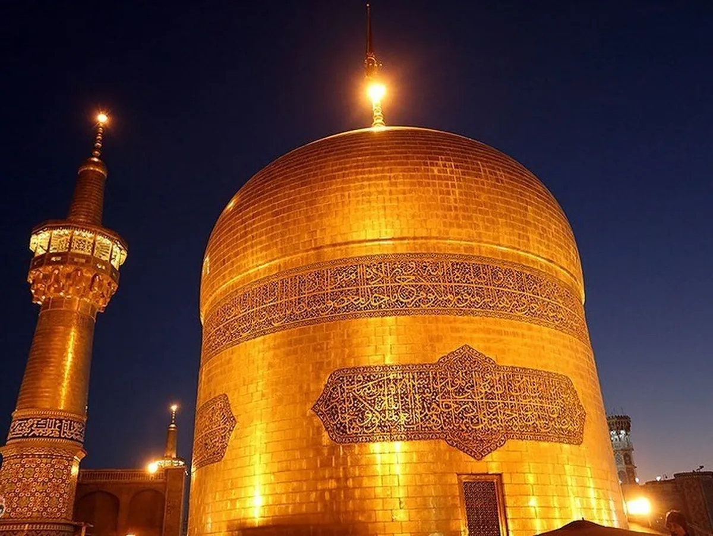

دليل الزائر العربي · العملة والدفع في إيران للسائح العربي: الريال والتومان وطرق الدفع
العملة وطرق الدفع في إيران: دليل الزائر العربي
الإجابة المختصرة
قبل السفر إلى إيران، تعرّف إلى الفرق بين الريال والتومان واسأل عن طريقة كتابة المبلغ لتفادي الالتباس. تحقّق من سعر الصرف ووسائل الدفع المتاحة وقت الرحلة، ولا تفترض قبول البطاقات الأجنبية؛ احتفظ بخطة بديلة وراجع التفاصيل محلياً.

يساعدك فهم العملة المحلية وطرق الدفع قبل الوصول إلى إيران على تجنّب الالتباس عند التسوق أو استخدام النقل. تتغير القواعد والخدمات المتاحة، لذلك تعامل مع هذا الدليل كقائمة استعداد، وتحقق من المتطلبات المالية الحالية من مصادر موثوقة قبل السفر.
الفرق بين الريال والتومان
تُستخدم كلمتا الريال والتومان في التعاملات اليومية، وقد تُعرض الأسعار بصيغ مختلفة. اسأل دائماً عن العملة المقصودة والمبلغ النهائي قبل الدفع، واطلب توضيحاً إذا كان الرقم شفهياً أو مختصراً.
لا تفترض أن كل سعر مكتوب أو منطوق يستخدم الوحدة نفسها. عند الحاجة، اكتب المبلغ بالأرقام واطلب من البائع تأكيده لتقليل أخطاء التحويل.
البطاقات الأجنبية والنقد
لا تفترض أن بطاقتك المصرفية الصادرة خارج إيران ستعمل في المتاجر أو أجهزة الصراف. تحقق قبل السفر من القيود المصرفية الحالية وخيارات الدفع المتاحة قانونياً، وخطط لميزانية نقدية مناسبة دون حمل مبالغ كبيرة في مكان واحد.
لا تعتمد على وعود غير موثقة بوجود بطاقة سياحية أو خدمة تحويل متاحة لكل زائر. اسأل عن الرسوم وشروط الإصدار والهوية المطلوبة، وتأكد من المصدر قبل تسليم بياناتك أو أموالك.
الصرف الآمن وإدارة الميزانية
قارن السعر والرسوم قبل إجراء الصرف، واحتفظ بإيصال العملية إن توفر. تجنب تبديل الأموال مع أشخاص مجهولين، ولا تُظهر كامل المبلغ النقدي في الأماكن العامة.
راجع أيضاً دليل ميزانية رحلة مشهد لتقدير بنود الإنفاق، لكن تعامل مع أي تقدير سابق بوصفه إرشادياً وليس سعراً حالياً.
التسوق وتأكيد السعر
قبل شراء هدية أو خدمة، اسأل هل السعر بالريال أم التومان، وهل يشمل الضرائب أو التوصيل أو أي رسوم إضافية. في المشتريات الكبيرة، اطلب فاتورة أو إيصالاً وتحقق من الكمية والجودة وسياسة الاستبدال.
للتسوق والهدايا، راجع دليل الأنشطة في مشهد، واستعد لبعض العبارات بالفارسية من دليل عبارات فارسية للزائر العربي.
نموذج بسيط لتقسيم ميزانية الرحلة
قبل تحويل ميزانيتك إلى مبلغ نقدي، اكتب النفقات المتوقعة لكل فرد ثم اجمعها بحسب عدد المسافرين والليالي. لا تستخدم سعراً منشوراً قديماً باعتباره سعر صرف أو تكلفة حالية.
- تكاليف ثابتة قبل السفر: تذاكر الوصول، الإقامة، التأمين إن وجد، وأي حجز مدفوع مسبقاً.
- تكاليف يومية: الطعام، التنقل داخل المدينة، الاتصالات، والمشتريات الصغيرة.
- تكاليف متغيرة: انتقالات إضافية، تغيير موعد، رسوم أمتعة، أو احتياجات طارئة.
- احتياط منفصل: مبلغ للطوارئ لا يدخل في ميزانية التسوق أو الأنشطة الاختيارية.
سجّل كل سعر مع وحدته: ريال أم تومان، وحدد هل يشمل الرسوم أم لا. وعند مقارنة عروض الإقامة أو النقل، قارن التكلفة النهائية للخدمة نفسها وليس الرقم الأول المعلن فقط.
كيف تتحقق من سعر الصرف وتوثق الدفع؟
يمكنك مراجعة البيانات المنشورة لدى البنك المركزي كمصدر رسمي للمعلومات، لكنها لا تعني بالضرورة أن السعر نفسه متاح لك نقداً لدى كل جهة صرافة. اسأل عن السعر النهائي والعمولة قبل تنفيذ العملية، وتعامل مع جهة موثوقة، واحتفظ بإيصال الصرف أو الدفع متى توفر.
لا تسلّم جواز السفر أو بياناتك المصرفية لأشخاص غير معروفين مقابل وعد بتوفير بطاقة أو تحويل. إذا عرضت عليك خدمة مالية مخصصة للزوار، فتحقق من الجهة المصدرة وشروط الإصدار والرسوم وطريقة استرداد الرصيد قبل الدفع.
للتخطيط التفصيلي، راجع دليل تكلفة رحلة مشهد، مع الانتباه إلى أن أي تقديرات فيه إرشادية وتحتاج إلى تحديث من مقدمي الخدمة.
مصدر رسمي للمعلومات النقدية
- صفحة أسعار العملات لدى البنك المركزي الإيراني للاطلاع على البيانات المنشورة وتاريخها.
أسعار الصرف المنشورة قد تختلف عن أسعار البيع والشراء الفعلية والعمولات التي يعرضها مقدم الخدمة للزائر.
خطة نقدية عملية للزائر العربي
الإجابة المختصرة: خطّط على أساس الدفع النقدي؛ البطاقات الأجنبية مثل Visa وMastercard لا تعمل عادةً على شبكة الدفع المحلية في إيران، فلا تجعلها وسيلة الدفع الوحيدة. أحضر وسيلة نقدية مناسبة وفق أنظمة بلد المغادرة والدخول، ثم بدّل لدى جهة صرافة مرخصة بعد معرفة السعر والعمولة.
- قبل السفر: اسأل مصرفك عن قيود استخدام البطاقة أو الحساب من الخارج، ولا تعتمد على السحب من أجهزة الصراف الإيرانية ببطاقة أجنبية.
- عند الوصول: قارن السعر والرسوم لدى مكاتب صرافة مرخصة، وتجنب تبديل الأموال في الشارع أو مع وسيط مجهول.
- بعد الصرف: احتفظ بالإيصال، واكتب المبلغ بالريال والتومان عند الحاجة، وتأكد من عدد الأصفار قبل مغادرة المحل.
- أثناء الرحلة: قسّم النقد بين مكان آمن ومبلغ يومي صغير، ولا تعرض كامل ما تحمله أمام الآخرين.
- قبل شراء بطاقة سياحية محلية إن عُرضت عليك: تحقق من الجهة المصدرة، والرسوم، والهوية المطلوبة، وحدود الاستخدام، وطريقة استرداد الرصيد غير المستخدم؛ لا تفترض توفرها أو قبولها في كل مكان.
تختلف قواعد إدخال وإخراج العملات ومتطلبات التصريح بحسب الأنظمة السارية ومنافذ السفر؛ راجع الجمارك والجهات الرسمية قبل الرحلة ولا تعتمد على حدود متداولة في صفحات قديمة.
للتخطيط، قارن هذا الدليل مع ميزانية رحلة مشهد، ثم راجع خيارات الإقامة قرب الحرم وخدمات التنسيق المحلي. تقديرات الميزانية لا تغني عن تأكيد السعر الفعلي يوم الدفع.
الأسئلة الشائعة
هل الريال والتومان عملة واحدة؟
التومان وحدة شائعة في الحديث اليومي، بينما الريال هو الوحدة الرسمية. اسأل دائماً عن الوحدة المقصودة وتأكد من المبلغ قبل الدفع.
هل تعمل بطاقتي المصرفية الأجنبية في إيران؟
لا تفترض ذلك. تحقق من القيود الحالية لدى مصرفك ومن المصادر الرسمية قبل السفر، وخطط لبديل قانوني مناسب.
هل يمكنني الاعتماد على أسعار الصرف المنشورة في الإنترنت؟
اعتبرها مؤشراً أولياً فقط؛ الأسعار والرسوم تتغير. تحقق من السعر النهائي والرسوم عند إجراء العملية.
أين أبدل المال بأمان؟
استخدم جهة مرخصة أو موثوقة بعد التحقق من وضعها الحالي، واطلب توضيح السعر والرسوم وإيصالاً إن توفر.
هل أحتاج إلى حمل نقد طوال الرحلة؟
خطط وفق خيارات الدفع التي تأكدت من توفرها، ووزع النقد بأمان ولا تحمل أكثر مما تحتاجه في مكان واحد.
ما أهم سؤال قبل دفع ثمن الفندق أو التاكسي؟
أكد المبلغ النهائي والعملة التي يُحسب بها السعر وما إذا كانت هناك رسوم إضافية، واحتفظ بتفاصيل الحجز أو الاتفاق.
أدلة مرتبطة
راجع الدليل الشامل لمشهد ودليل زيارة حرم الإمام الرضا لاستكمال التخطيط.
الخطوة التالية
إذا كنت تخطط لزيارة مشهد وتريد ترتيب الوصول أو الإقامة أو برنامج الرحلة، اطلع على صفحة الخدمات أو أرسل استفسارك إلى حسين عبر واتساب.